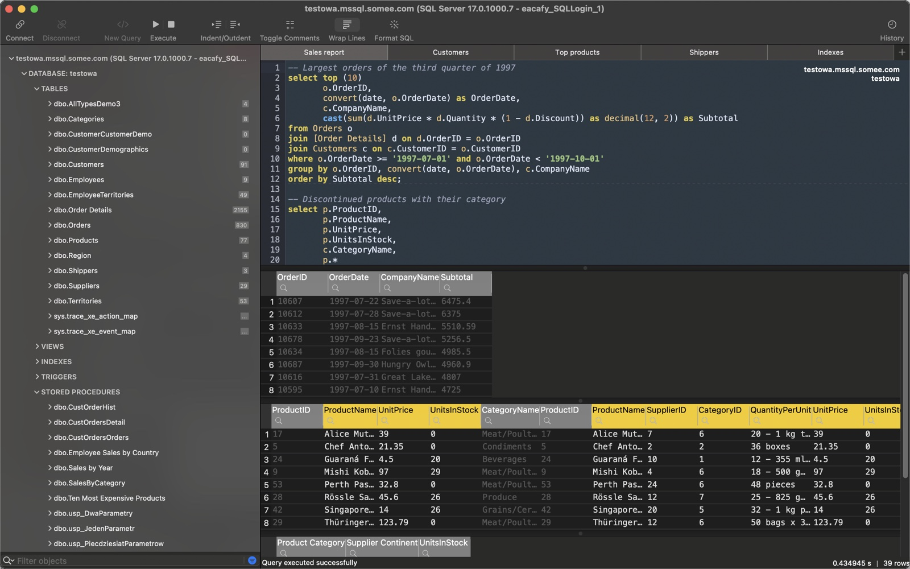
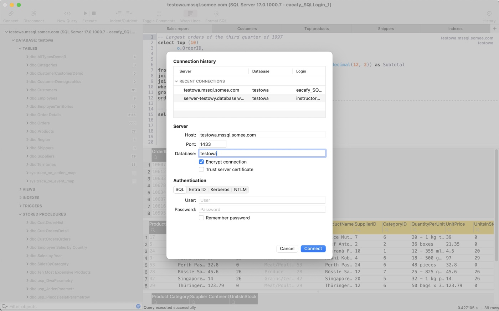
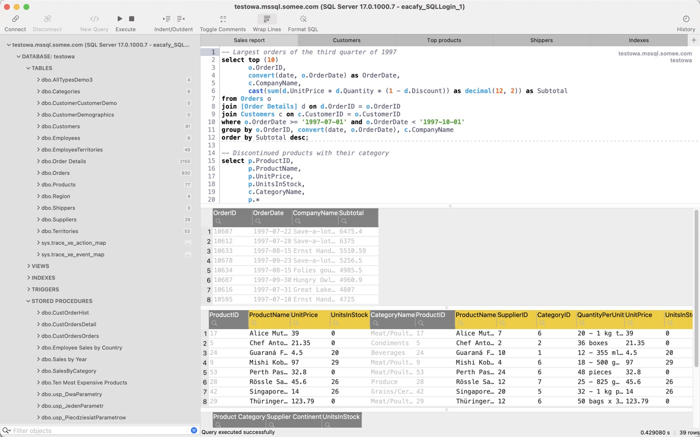
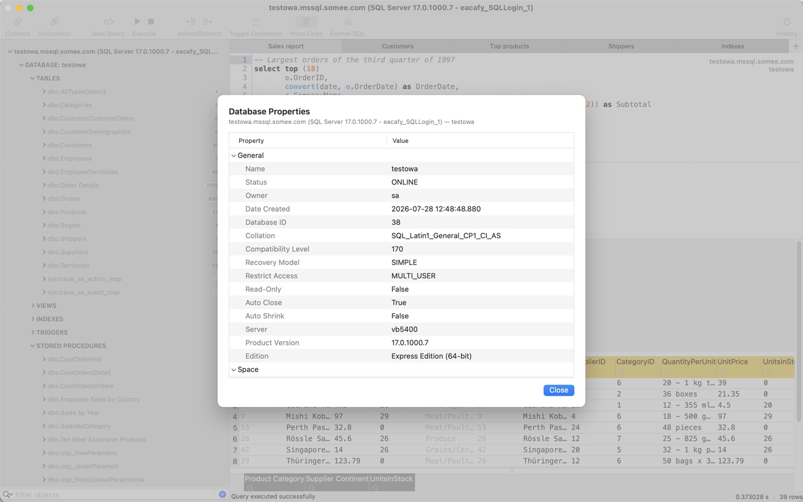
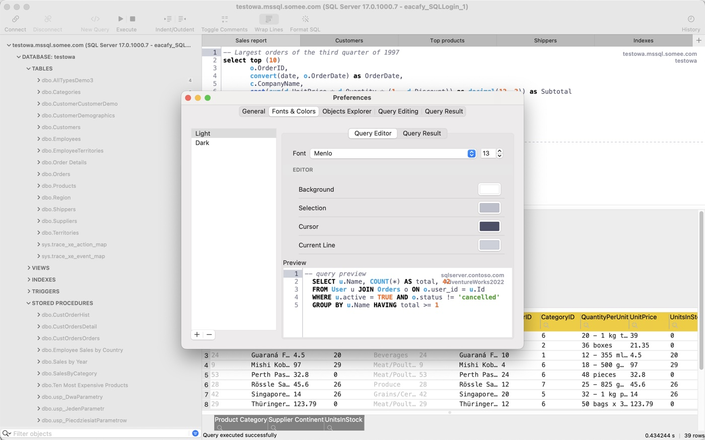

SQL Server client for macOS
$19.99, one-time purchase · Requires macOS 13 or later
A fast, native SQL Server manager for the Mac. Sign in with SQL login, Microsoft Entra ID, Kerberos or NTLM — with zero driver installation. Built with Swift.

Everything you need to work with SQL Server on a Mac
Truly native
A real Mac app built with Swift and AppKit. Fast, light on memory, at home in dark mode — no Electron, no Java.
Zero setup
The SQL Server wire protocol is built right in, so you can connect to SQL Server without ODBC drivers. Nothing to configure, no Homebrew — download and connect.
Sign in your way
SQL authentication, Microsoft Entra ID, Windows authentication with Kerberos single sign-on, or NTLM. Works with Azure SQL and on-premises servers alike.
Many servers, many tabs
Connect to several servers at once. Every tab keeps its own session, so a query that runs for minutes never blocks the one you want to run right now.
Smart T-SQL editor
Autocompletion that reads your actual schema — instant even on databases with hundreds of thousands of columns. Syntax highlighting with themes, a SQL formatter and a searchable query history.
A complete objects explorer
Tables, views, stored procedures, functions, triggers, synonyms, sequences, types and assemblies — down to keys, constraints, indexes and routine parameters. Every database on the server, loaded as you expand it, filtered by name or even by column.
Script anything
Generate the statements SSMS generates — CREATE and DROP for any object, SELECT, INSERT, UPDATE and DELETE for tables, and CREATE, ALTER or CREATE OR ALTER for procedures and functions — into the current editor, a new tab or the clipboard. Procedures and functions come with a parameters form, filled in and ready to execute.
Execution plans, drawn
Turn on the actual execution plan and read it as a diagram laid out the way SSMS lays it out — relative cost per operator, warnings called out, and full keyboard navigation through the tree.
Copy rows as SQL
Turn selected result rows into INSERT, UPDATE or DELETE statements in correct T-SQL — the WHERE clause is filled in from the primary key whenever the rows trace back to a single table — or copy them as CSV and TSV.
Edit and move data
Edit values right in the results grid, set NULLs and inspect large text and binary values in a viewer built for them. Export results to CSV, JSON, XML or SQL, and load CSV files straight into a table.
Exactly what the server returned
Dates, times and offsets are rendered the way SSMS renders them — no silent time-zone shifts, no lossy formatting. Binary, rowversion and geography columns stay untouched until you ask for hex or a preview.
Properties, in full
Table, view, index and column properties in one place — including a proper editor for extended properties, so you can document a schema in MS_Description without ever leaving the app.
Somewhere to land after Azure Data Studio
Azure Data Studio was retired on 28 February 2026 and no longer receives fixes. This is a maintained, native Azure Data Studio alternative for the Mac — same daily work, without an Electron runtime underneath.
Private by design
No telemetry, no accounts, no data collection. Passwords live in the macOS Keychain, and nothing about your queries or your servers is sent anywhere but the server you connected to.
A closer look
Four corners of the app: connecting, browsing, documenting and making it your own.
{kind=link}

{kind=link}

{kind=link}

{kind=link}

One price, no subscription
Buy it once on the Mac App Store. It keeps working whether or not you ever open this page again.
One-time purchase · Mac App Store
- No subscription, no licence server, no account to create
- Updates included
- Unlimited servers and connections
- SQL, Entra ID, Kerberos and NTLM sign-in
- Requires macOS 13 or later
Questions
Can I use Windows authentication from a Mac?
Yes. If your Mac already holds a Kerberos ticket for the domain, you can connect with single sign-on and no password at all. Where Kerberos is not available, NTLM works as a fallback with your domain user name and password.
Which versions of SQL Server are supported?
The app speaks TDS 7.4, the protocol version introduced with SQL Server 2012, so it works with SQL Server 2012 and later, as well as Azure SQL Database. The one exception is an instance configured to force strict encryption (TDS 8.0, SQL Server 2022 and later) — that mode is not supported.
Does it run natively on Apple silicon?
Yes. It is written in Swift and AppKit and runs natively on Apple silicon, as well as on Intel Macs running macOS 13 or later. It is not an Electron or Java application, so it launches quickly and stays light on memory.
Can I edit query results directly in the grid?
Yes, provided the grid contains every column of the table’s primary key — that is what lets the app identify the row to update, so a query that selects only some of the key columns gives you a read-only grid. The rows also have to come from a real table: results from a view, an aggregate or a temporary table are read-only, as are IDENTITY, computed and rowversion columns, which the server fills in itself. Where editing applies, you can change values in place, set NULLs, and copy selected rows as ready-to-run INSERT, UPDATE or DELETE statements — with INSERT available both with and without identity values.
Is there a free trial?
No. There is no trial version and no time-limited mode — the app is a single one-time purchase. The Mac App Store’s own refund policy applies to it as it does to any other purchase, so if it turns out not to suit your setup, you can ask Apple for a refund.